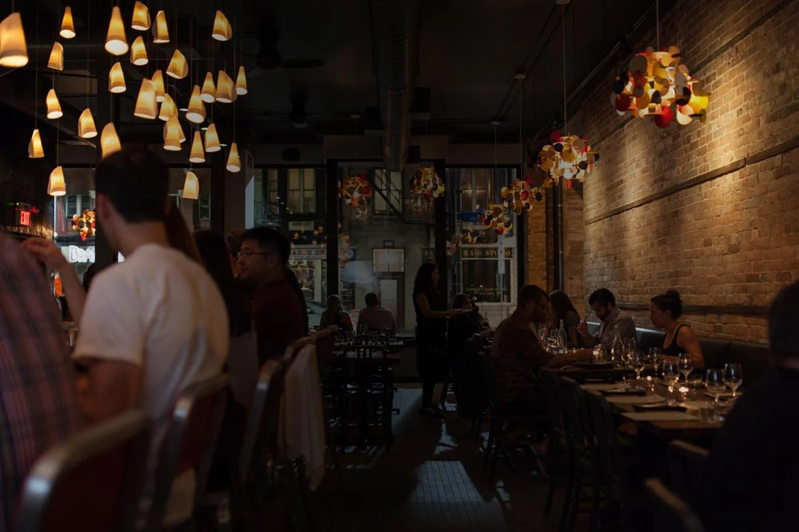
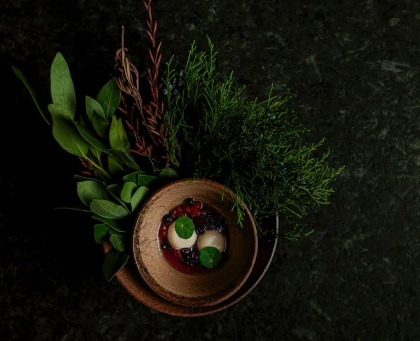
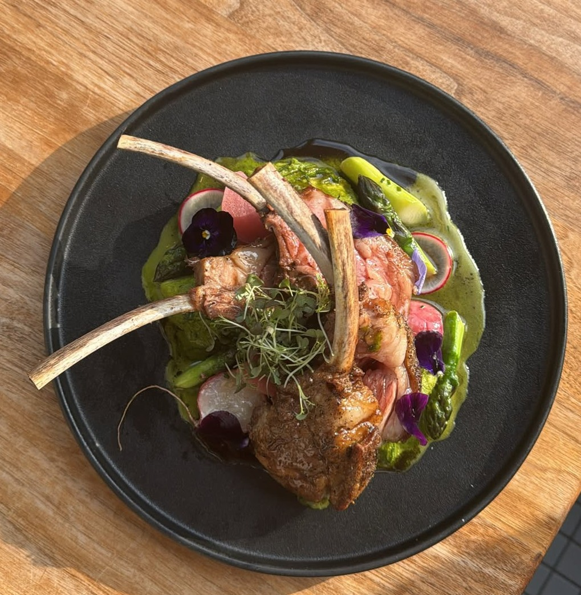
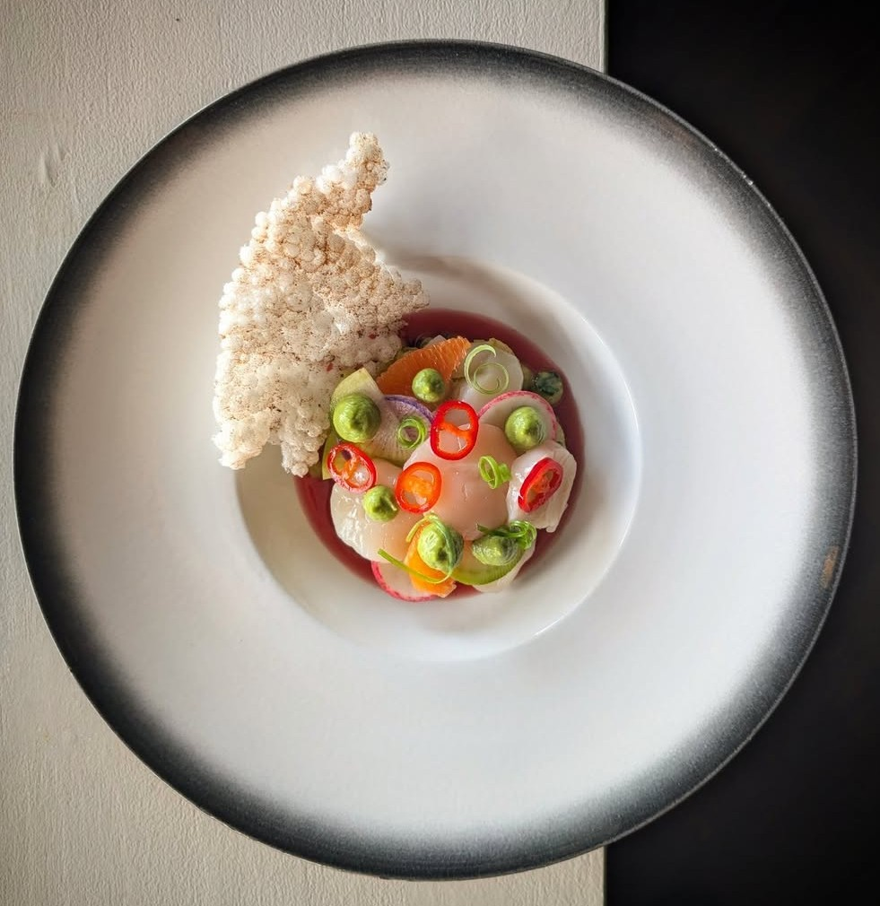
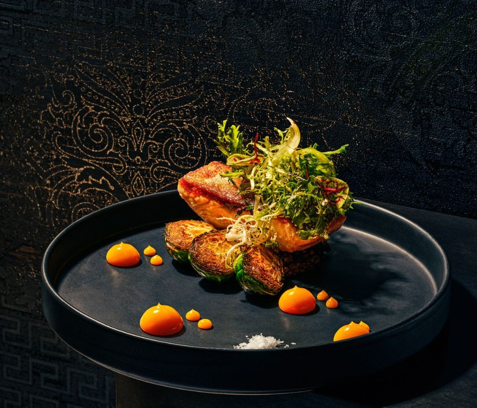
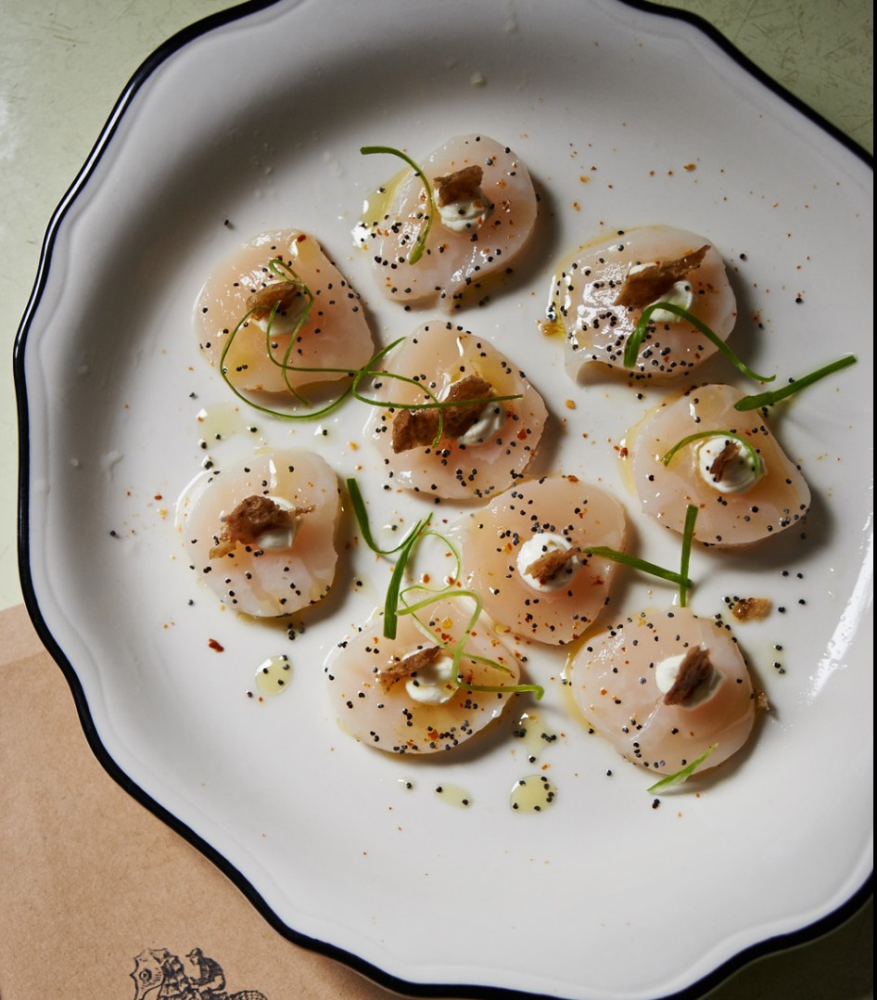
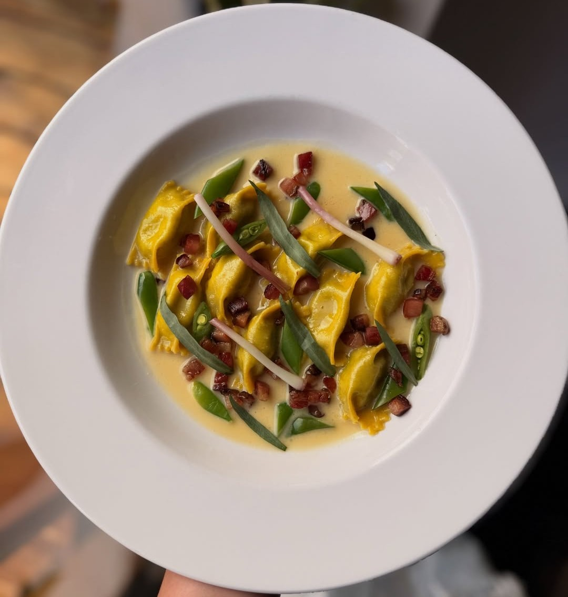
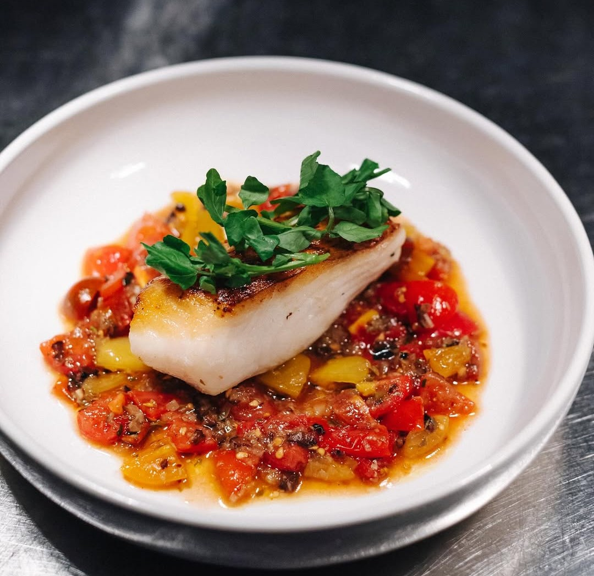

Ottawa Fine Dining
August 2026
Ottawa's restaurant scene has never been stronger. A new generation of chefs is cooking with ambition, precision, and a clear point of view — and the city's dining public is keeping up. Whether you're looking for a modernist tasting experience, a fermentation-driven chef's counter, or a neighbourhood room that simply gets everything right, Ottawa has it. These are the restaurants worth your time right now.

Chef Briana Kim's fermentation-driven chef's counter is one of the most distinctive dining experiences in Canada right now, not just Ottawa. Sixteen seats, an open kitchen, and a menu that changes with Antheia's own fermentation calendar. Intimate, considered, and building a reputation that extends well beyond the city.
There is no menu at Atelier. No choices, no printed card — just a modernist tasting experience that changes constantly and executes at a level that would be remarkable in any city. Chef Marc Lepine has been running this format for over a decade, and the consistency is extraordinary. This is Ottawa's most ambitious kitchen, and arguably its most important restaurant.

Inventive Canadian cooking with bold flavours and a neighbourhood feel. Fauna has been one of Ottawa's most consistent and creative kitchens for over a decade, drawing on local farms and producers to build a menu that feels both rooted and exciting. The room is warm, the cocktails are excellent, and the food consistently punches above its weight.

Quiet, precise, and completely self-assured. Stofa operates in Wellington West without fanfare, which is exactly the kind of restaurant that rewards those paying attention. Technical cooking with genuine point of view, a three or five course format that changes regularly, and a room that feels like exactly the right size for what they're doing.

Refined Canadian cuisine rooted in seasonality, steps from Parliament Hill. Aiana brings a clarity of vision to Ottawa's fine dining scene that feels both new and necessary. Led by Chef Raghav Chaudhary, the kitchen blends classical discipline with a multicultural perspective on Canadian ingredients — the result is polished, worldly, and deeply hospitable.

A raw bar, seafood and pasta-focused kitchen where precision meets understated elegance. Supply & Demand has quietly become one of Wellington Village's most essential restaurants — the kind of place where the bread alone sets the tone for what follows. The handmade pasta is exceptional, the raw bar is pristine, and the whole experience feels effortlessly well-considered.

Town has been a cornerstone of Ottawa dining since 2010 and remains one of the most reliably satisfying rooms in the city. Chef Marc Doiron's creative take on Italian-influenced cooking is unpretentious and deeply pleasurable — the kind of food that makes you want to order more. Warm, welcoming, and consistently excellent.

A modern take on French cuisine tucked below street level on Elgin, with a raw seafood and champagne bar that sets the mood before you've even sat down. Gitanes is one of Ottawa's most atmospheric dining rooms — candlelit, intimate, and cellar-like — with a kitchen that backs it up with carefully sourced Canadian ingredients and French technique applied with genuine skill.